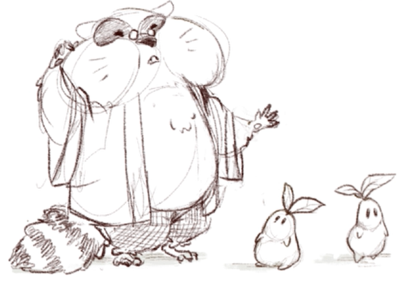

Hi!
I am Sofia Lucarelli, also known online as Lophy Sophy. I am an artist from Italy working in visual development, concept art, character design and 2D animation.
I am currently studying Character Animation at Gobelins in Paris (CRFA, class of 2027). Before that I earned a BA in Illustration and Animation at IED in Rome, where I built my foundations in drawing, storytelling and animation.
My work moves between digital and traditional media. Alongside concept art and animation I practice watercolor, etching and printmaking, and those slow, physical processes keep feeding my digital images.
I am looking for internships and junior roles in visual development and character design, and I am always glad to hear about new projects and collaborations.
Want to work together? Write me at lophy.sophy@gmail.com.

Education
-
Gobelins Paris
Character Animation · CRFA · 2024-2027 -
IED Rome
BA in Illustration and Animation · 2021-2024